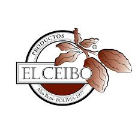
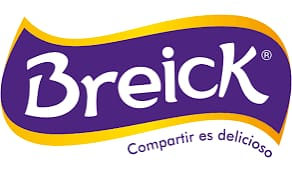
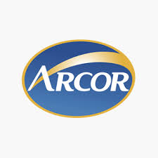
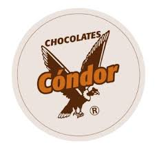
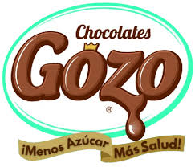

| Empresa | Contacto | Mas informacion | Logo |
|---|---|---|---|
| Ceibo | marketing@elceibo.com. | El Ceibo y con ello ha llegado a contribuir en la producción de cacao que representa el 65% de los ingresos de las áreas rurales de Alto Beni, donde esta central de cooperativas tiene el 80% de la producción. |  |
| Breick | info@breick.com.bo | Breick es una reconocida marca de chocolates en Bolivia1. Fundada por Víctor Ormachea, la empresa ofrece más de 150 productos, incluyendo tabletas, bombones, grageas, galletas e insumos de repostería. |  |
| Arcor | arcor@arcor.com. | Trabajamos con el propósito de hacer accesibles las tendencias en alimentación para que todas las personas puedan vivir mejor. Por eso, innovamos continuamente en nuestras tres divisiones de negocio: Alimentos de consumo masivo, Agronegocios y Packaging, con una gestión sustentable como modo de ser, hacer y crecer. |  |
| Condor | soledad_condoriq@hotmail. com | Chocolates Condor es una fábrica de chocolates y dulces en Bolivia, con más de 50 productos de su invención agrupados en 7 líneas. |  |
| Gozo | info@chocolatesgozo.com | Nuestro cacao es cultivado con esmero por nosotros mismos y seleccionado cuidadosamente. Libre de aditivos, gluten, saborizantes y agroquímicos. Artesanos cacaoteros lo transforman con pasión en un producto de calidad inigualable. |  |